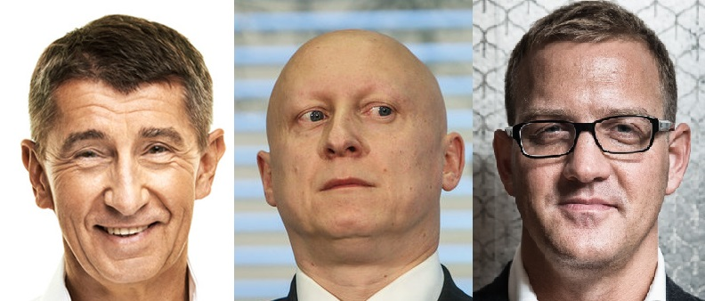

Babišův člověk pokryl odložení kauzy Mibrag
Etický kodex
Pro zajištění objektivity uvedených informací na těchto stránkách jsou v textech označeny barevně následující skupiny informací:
Informace jako kvalifikované závěry nebo komentáře z veřejně dostupných zdrojů nebo zdrojů uvedených na těchto stránkách – černý text
Informace přejaté beze změny z veřejně dostupných zdrojů nebo zdrojů uveřejněných na těchto stránkách – modrý text
Informace, které nelze z veřejně dostupných zdrojů potvrdit, nebo informace ze zdrojů, které nemůžeme veřejně publikovat – zelený text.
Usnesení policie o odložení případu
Zveřejňujeme plné znění usnesení policie ze dne 31. března 2015, které jako hlavní podklad pro odložení kauzy uvádí znalecký posudek ÚOM – VŠB-TUO-191/10/2014.
Posudek vytvořil Ústav oceňování majetku při ekonomické fakultě VŠB – TU Ostrava, jehož ředitelem je již dlouhá léta Ing. Vladimír Kulil, Ph.D. Inženýr Kulil je od poloviny roku 2014 zastupitel města Ostravy za hnutí ANO2011 Andreje Babiše a nyní je na Babišově kandidátce do krajských voleb.
Zejména díky Kulilovu posudku minulý rok v březnu policie kauzu Mibrag odložila. Tento případ jako jeden z mnoha svědčí o Babišových zájmech ve státem vlastněném ČEZu, kdy před volbami poukazoval na miliardové tunelování této společnosti. Po svém nástupu na ministerstvo financí, které vykonává akcionářská práva státu v ČEZu, však žádné radikální změny neprovedl a ponechal společnost na pospas managementu, který dlouhá léta ČEZ tuneluje. Hlavním důvodem je Babišův cíl získat kontrolu nad lukrativní částí společnosti Unipetrol.
Energetický a průmyslový holding, který díky Babišovu člověku vyváznul z policejního vyšetřování, a státní firma Čepro uzavřely minulý rok spojenectví v souboji o většinový balík společnosti Unipetrol. EPH vedený Danielem Křetínským chce petrochemickou skupinu koupit od polského PKN Orlen. Dohodl se s Čeprem na spolupráci, která by měla vyústit v rozdělení Unipetrolu. EPH plánuje nejdříve odkoupit Unipetrol od polských akcionářů, poté by jakožto nový majitel odprodal Čepru rafinerii v Kralupech nad Vltavou.
Otázky a ne/odpovědi
Při porovnání otázek položených policí a odpovědí VŠB ÚOM je zřejmé, že nejsou plně vypořádané. Zároveň jsou závěry nekonkrétní a otevřené. I přes tyto nedostatky policie učinila závěr o odložení případu.
Na otázku 2, jestli bylo odpovídající a nezbytné užití účetního standardu IAS 28 je zodpovězeno mj., že tento standard neurčuje, ani jiným způsobem nestanoví a neovlivňuje, vlastní nákupní nebo prodejní cenu při nákupu nebo prodeji podílu ve společnosti s podstatným vlivem.
Na otázku 3, jestli bylo odpovídající a nezbytné použití mezinárodního účetního standardu IFRS 5 pro účetní stanovení ceny obchodního podílu společnosti před prodejem v roce 2011 je zodpovězeno mj., že Standard neurčuje ani jiným způsobem nestanoví a neovlivňuje vlastní cenu prodejní transakce při prodeji aktiv držených k prodeji ve smyslu IFRS 5. Znalec došel k závěru, že společnost ČEZ a Severočeské doly vedou účetnictví podle mezinárodních účetních standardů a v souladu se zákonem.
Na otázku 4, jestli došlo k chybnému stanovení ceny před prodejem podílu prodávajícím v jeho neprospěch s požadavkem na vyčíslení podílu je zodpovězeno, že ÚOM neshledal žádné chybné stanovení ceny. Znalec přitom neuvádí metodu, jak k tomuto závěru došel, tím je jeho závěr nepřezkoumatelný.
K otázce 5, jaká byla tržní hodnota obchodního podílu, ÚOM došel k mj. k rozdílnému závěru ve vyčíslené částce oproti společnosti Deloitte Advisory, která vytvořila původní hodnocení, přičemž rozdíl byl ve výši 30 %. I přesto se policie rozhodla případ odložit.
Amnézie při výpovědích a kariérní postup
Při prostudování policejního odůvodnění pro odložení kauzy Mibrag je zajímavá ztráta paměti, která postihla většinu vypovídajících. Uvádíme stručný přehled, koho všeho částečná amnézie nakazila:
- Martin Roman
- Daniel Beneš
- Tomáš Petráň
- Petr Bureš
- Jan Demjanovič
- Daniel Janeček
- Pavel Janík
- Karel Koszegy
- Martin Novák
- Vladimír Schmalz
- Bohdan Urban
- Marek Spurný
- Jan Špringl
- Petr Čihák
- Jan Marek
Zajímavým faktem je také kariérní postup Jiřího Feista, v době dokončení celé operace odpovědného zaměstnance útvaru business developement společnosti ČEZ, který krátce po ukončení celé transakce nastoupil do společnosti EPH Daniela Křetínského, kde má na starosti strategie. Feist policí vyslechnut nebyl.
Stručný popis kauzy Mibrag
ČEZ si Mibrag v roce 2009 koupil napůl s finančníky ze skupiny J&T, později podíl přešel do jimi založeného holdingu EPH vedeného Danielem Křetínským. Za svoji půlku dal polostátní ČEZ celkem 206 milionů eur (zhruba 5,5 miliardy Kč). Za dva roky později si svou investici rozmyslel a svoji polovinu EPH levně odprodal, jen za 130 milionů eur (asi 3,2 miliardy Kč). Zlevnění umožnilo hlavně podezřelé účetní přecenění podílu ČEZ v dolech těsně před prodejem.
Celková škoda z obchodu pro polostátní ČEZ tak mohla vyšplhat až na částku kolem 2,5 miliardy korun, zatímco EPH mělo podobnou částku na celé akci vydělat. Policie odložení kauzy vysvětlila na celkem 63 stranách a staví v něm hlavně na posudku ceny za Mibrag, který si zadala u oceňovacího ústavu Vysoké školy báňské v Ostravě.
Zajímavostí, která z rozsáhlého policejního pátrání, při kterém byla vyslechnuta více než desítka svědků včetně exšéfa ČEZ Martina Romana či Daniela Křetínského, vyplynula, je jistá ztráta paměti na straně státní firmy. Nikdo z vedení ČEZ si totiž nemohl vzpomenout, kdo vlastně s nápadem na společnou nabídku koupě Mibragu s finančníky kolem Křetínského a J&T přišel.
Původně šly obě firmy do tendru samostatně, ČEZ navíc s mnohem nižší nabídkou než J&T. Je tedy otázka, zda by J&T případně vůbec byla schopna sama obchod dokončit a profinancovat. Křetínský si ale vzpomněl, že obchod dojednal s tehdejším šéfem fúzí a akvizic ČEZ Vladimírem Schmalzem a manažerem Alanem Svobodou. Zároveň popřel, že by nebyli schopni bez ČEZ Mibrag koupit.
Na podzim minulého roku začala případ prošetřovat německá policie. Na případu pracují hned dvě státní zastupitelství, v Bochumi a v Halle. Bochumská prokuratura se zabývá okolnostmi prodeje Mibragu z roku 2009, kdy ho získalo české konsorcium složené z ČEZu a holdingu EPH.
Státní zastupitelství v Halle se případem také zabývá. Co přesně vyšetřuje, zatím neuvedlo.
Podle informací MDR Sachsen-Anhalt by se mohlo jednat o pozdější transformaci Mibragu. Polostátní ČEZ totiž odprodal svůj podíl holdingu EPH vedeným Danielem Křetínským v roce 2012.
Zdroje:
- Usnesení o odložení kauzy Mibrag
- https://www.respekt.cz/fokus/spolecny-obchod-cez-a-j-t-postihla-ztrata-pameti
- http://www.rozhlas.cz/zpravy/ekonomikavevrope/_zprava/nemci-proveruji-prodej-uhelne-spolecnosti-mibrag-tu-vlastni-cesky-eph--1544559
- https://echo24.cz/a/wat8C/kretinsky-se-dohodl-s-babisem-rozdeli-si-eph-a-cepro-unipetrol
- https://echo24.cz/a/iJu7t/babisova-stara-parta-z-unipetrolu-obsadila-ropovody